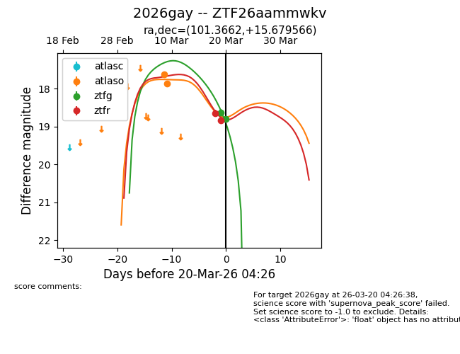
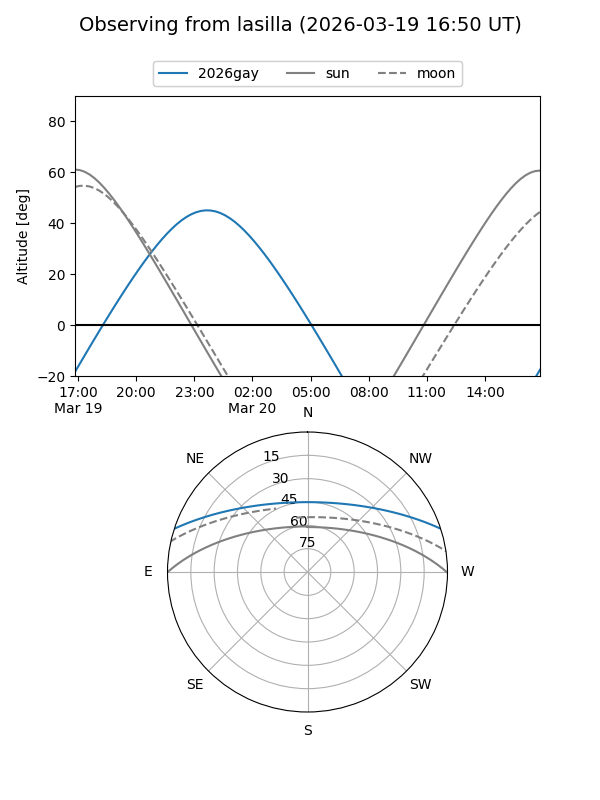
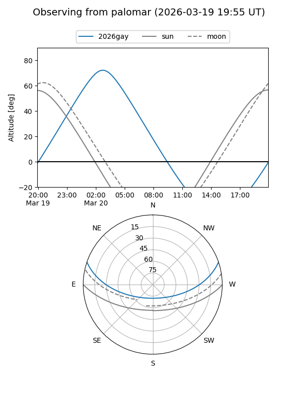
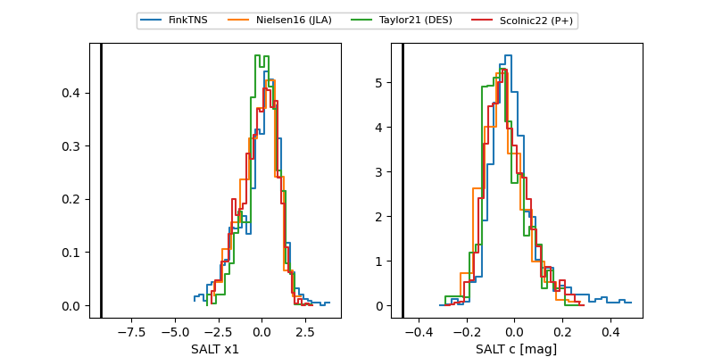

2026gay
Target 2026gay at 2026-03-20 04:28
Aliases and brokers:
FINK: link
Lasair: link
ALeRCE: link
TNS: link
YSE: link
alt names
ZTF26aammwkv (ztf,fink_ztf)
2026gay (tns,yse)
Coordinates:
equatorial (ra, dec) = 101.3662,+15.67957
equatorial (HMS+DMS) = 06:45:27.90,+15:40:46.44
galactic (l, b) = (198.2615,+5.79122)
Flags:
likely cv
Photometry:
last atlaso=17.86, ztfg=18.80, ztfr=18.84
2 atlaso, 2 ztfg, 2 ztfr detections
Lightcurve

Visibility


Additional plots
